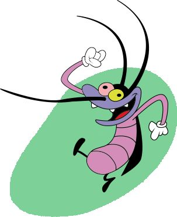
JOEY
cloud
Joey is one of the main villains in the series, along with Marky and Dee Dee. He is the self-proclaimed leader and eldest of the cockroach trio.
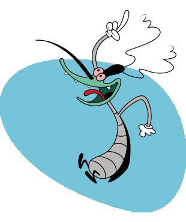
MARKY
favorite
Marky is tactful and is often seen as lazy, often not caring what the other two cockroaches are doing. Although he initially enjoys causing mischief.
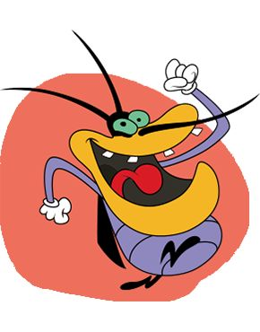
DEE DEE
attachment
Dee Dee is a cockroach who is always hungry and eats everything. He acts a bit childish and immature. He is also the most sensitive.
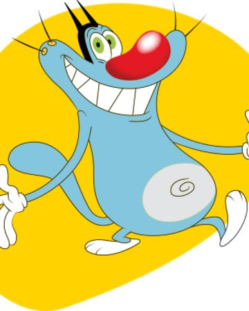
OGGY
computer
Oggy's defining trait is arguably his laziness, enjoying watching television, eating, and in a couple of instances, listening to music.
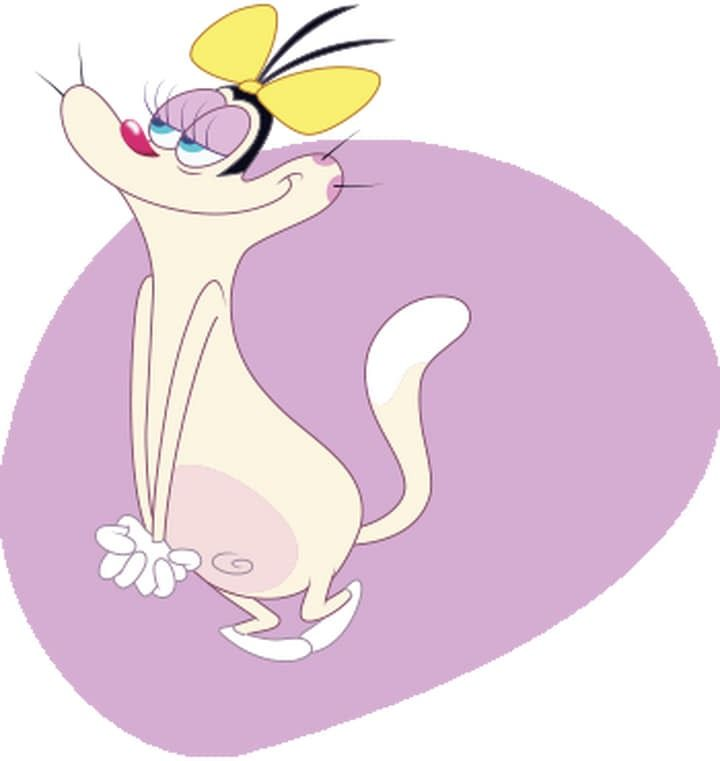
OLIVIYA
trafficOlivia is a kind, lovely and nature-loving cat. She likes insects and doesn't want anyone to hurt them. If someone makes her jealous.
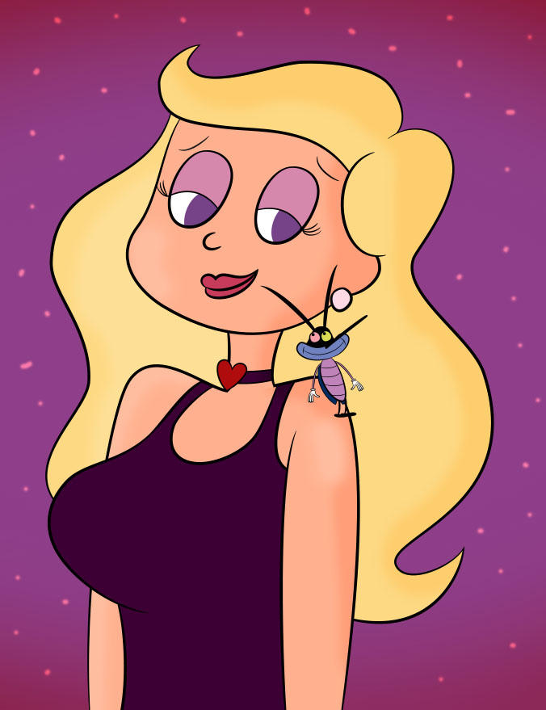
JUSTINE DELARUE
3d_rotation
Oggy first met her in Jealousy, but they broke up at the end because Marky made Oggy jealous and as such, the latter kicks her out.
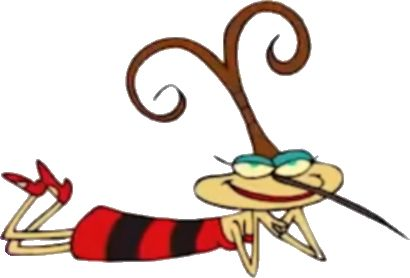
LADY K
casino
Lady K is a female cockroach (and the only female cockroach in the series), who lives in Olivia's house. She became the cockroaches.
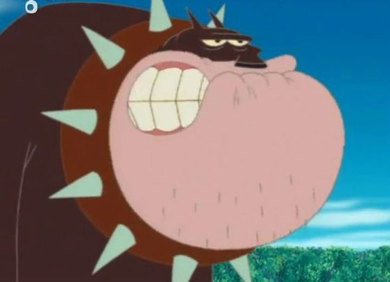
BOB
change_history
Bob is Oggy’s neighbor who has severe anger issues. Although he is not mentioned in the opening credits, he is a recurring character.
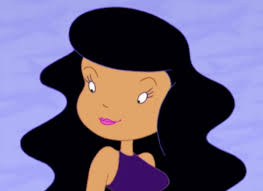
OGGY'S GF
child_friendly
Oggy first met her in Jealousy, but they broke up at the end because Marky made Oggy jealous and as such, the latter kicks her out of his house.
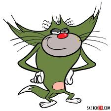
JACK
cloud_off
Jack can be described as the opposite of Oggy. He is quick-tempered, violent, focused, self-important, sometimes lazy, and a mechanic./span>
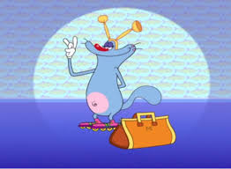
MONICA
color_lens
Monica, Oggy's twin sister and Jack's love interest, is a tritagonist character in the series. In Don't Rock the Cradle! and Oggy the Babysitter.
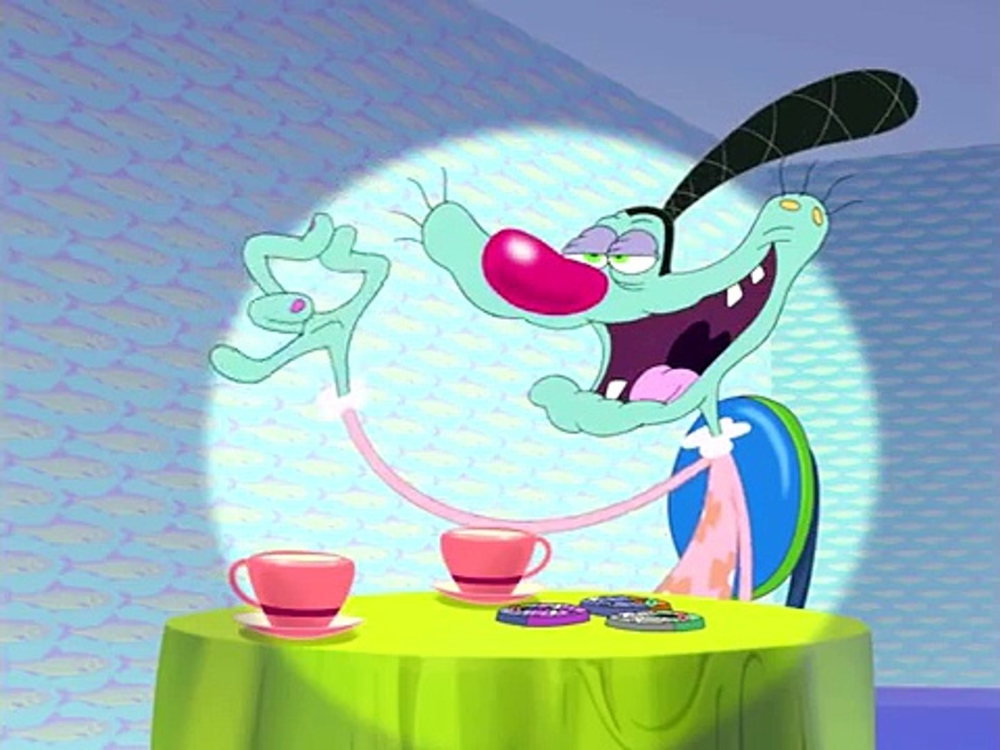
GRANDMOTHER
dashboard
She is Oggy's grandmother. She is usually very friendly to Oggy and likes to visit from month to month. In the Season 3 episode 'Oggy's Grandma'.